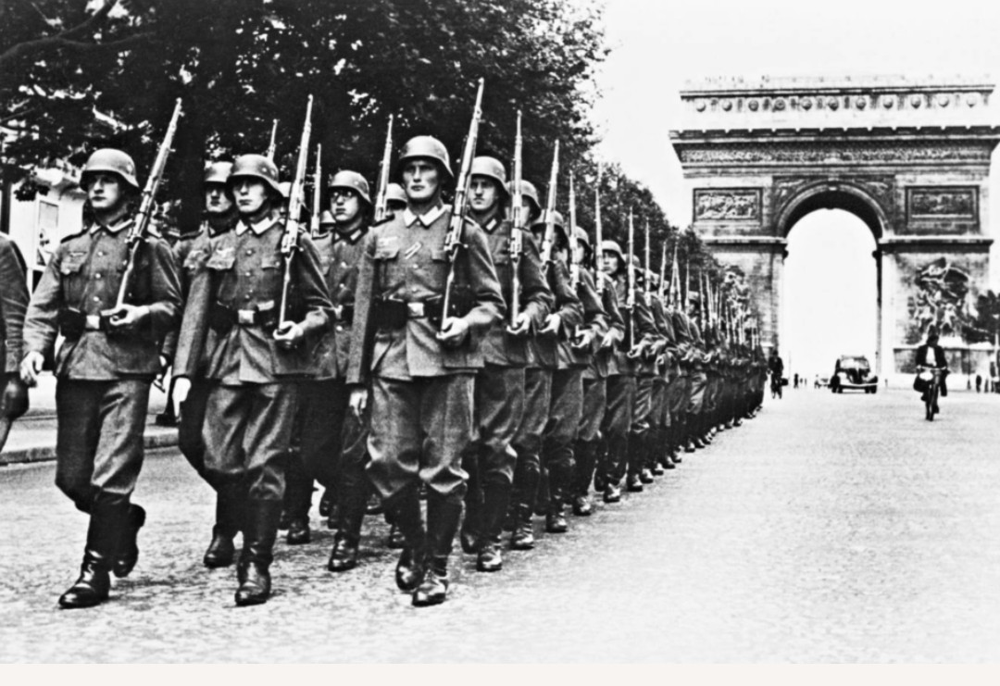
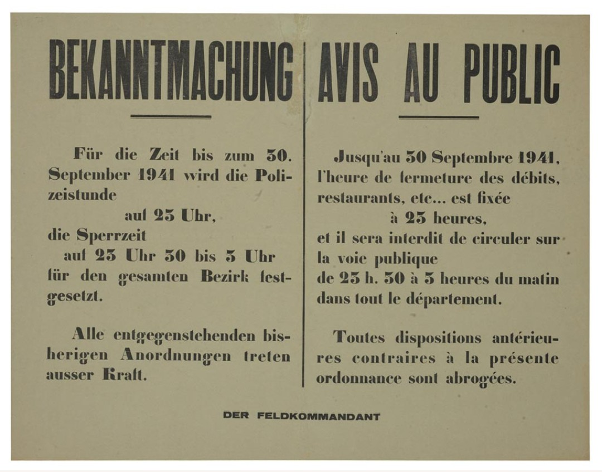

L’Occupation allemande commence en juin 1940 après la défaite française. Elle marque une période de contrôle militaire, administratif et économique exercé par l’Allemagne nazie sur une grande partie du territoire.
La vie quotidienne est bouleversée : restrictions, rationnement, couvre-feu, propagande, réquisitions et présence permanente des troupes allemandes.
La France est divisée en plusieurs zones :
En novembre 1942, l’Allemagne envahit la zone libre : la France entière est alors occupée.

L’occupant impose des ordonnances et des affiches officielles pour contrôler la population :
Ces affiches rythment le quotidien des Français et rappellent la présence constante de l’occupant.
Le quotidien est marqué par :
L’occupant exerce une répression sévère :
La Gestapo et la police allemande s’appuient sur des collaborateurs français pour traquer les opposants.
L’Occupation prend fin progressivement à partir de 1944 avec les débarquements alliés et la libération des villes françaises.
Paris est libéré le 25 août 1944. La France retrouve son indépendance et engage une période d’épuration visant les collaborateurs.